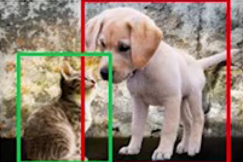

[Jornada de IA] Redes neurais para IA generativa
Allan Spadini
Instrutor Alura - Ciência de dados e IA
Doutor em Geofísica
Pós-graduado em Ciência de dados

Situação problema
| x1 - Temperatura do Reator (°C) | x2 - Vazão de Matéria-Prima (L/min) | y - Qualidade do Produto (Classe) |
|---|---|---|
| 85 | 12 | Dentro da Especificação |
| 92 | 18 | Fora da Especificação |
| 78 | 10 | Dentro da Especificação |
| 105 | 25 | Fora da Especificação |
| 88 | 15 | Dentro da Especificação |
Estrutura de um perceptron
\[ y = w_1 \cdot x_1 + w_2 \cdot x_2 \]
Problemas lineares
Problemas lineares
Estrutura de uma rede
\[ \hat{y} = w_0^{(2)} \cdot \left(w_{00}^{(1)} \cdot x_0 + w_{01}^{(1)} \cdot x_1 + b_1\right) + \\ w_1^{(2)} \cdot \left(w_{10}^{(1)} \cdot x_0 + w_{11}^{(1)} \cdot x_1 + b_2\right) + b_3 \]
Problemas lineares
Problemas não-lineares
Funções de ativação
\[ y = f(w_1 \cdot x_1 + w_2 \cdot x_2) \]
Tipos de Funções de Ativação
Lineares
- Sigmoide
- Tanh
- ReLU
- Leaky ReLU
- Softmax
Função ReLU
Função sigmóide
Adicionando complexidade
Perceptron de múltiplas camadas
Arquitetura de Redes Neurais
Componentes Essenciais
- Camadas densamente conectadas
- Normalização de dados
- Funções de perda (MSE, Cross-Entropy)
- Otimizadores (SGD, Adam)
Deep Learning vs Machine Learning Tradicional
Vantagens Chave
- Extração automática de features
- Capacidade de modelar relações não-lineares complexas
- Adaptabilidade a diferentes tipos de dados (imagens, texto, séries temporais)
Desafios
- Necessidade de grandes volumes de dados
- Requisitos computacionais intensivos
- Complexidade de interpretação
Backpropagation e Gradiente Descendente
O Algoritmo Fundamental
\[ \theta_{t+1} = \theta_t - \eta \cdot \nabla_\theta J(\theta) \]

Tarefas de visão computacional

Classificação de imagens
- Controle de Qualidade em Linhas de Produção: Usar deep learning para classificar produtos como “aprovados” ou “reprovados” com base em imagens capturadas por câmeras em linhas de produção simuladas.
- Identificação de Equipamentos: Classificação de diferentes tipos de máquinas ou equipamentos em um ambiente simulado para facilitar a configuração de cenários.
Classificação de imagens
- Classificação de Estoques: Identificar e classificar automaticamente itens armazenados em prateleiras simuladas em um centro de distribuição.
- Suzano: Avarias nos fardos de celulose
Detecção de objetos
- Detecção de Gargalos Operacionais: Detectar automaticamente a presença de empilhadeiras, operadores ou máquinas que estão causando bloqueios em áreas simuladas.
- Monitoramento de Atividades: Identificar e rastrear a movimentação de produtos, veículos ou pessoas em um ambiente simulado para análise de eficiência.
- Segurança no Ambiente de Trabalho: Detectar a presença de trabalhadores em áreas perigosas simuladas para avaliar riscos e sugerir melhorias.
Segmentação semântica
- Simulação de Layouts Industriais: Segmentar o ambiente simulado em diferentes áreas (linhas de produção, áreas de armazenamento, corredores, etc.) para análise detalhada de fluxo e eficiência.
- Análise de Ocupação de Espaço: Identificar como diferentes áreas de um armazém ou fábrica estão sendo utilizadas, ajudando a otimizar layouts simulados.
- Detecção de Anomalias: Segmentar áreas de falhas ou problemas em equipamentos simulados, como vazamentos ou superfícies danificadas. Gestalt Robotics
Imagens e IA generativa
Redes Convolucionais (CNNs)
- Operações de convolução
Redes Convolucionais (CNNs)
- Pooling layers
- Arquiteturas famosas (ResNet, VGG)
Redes Recorrentes (RNNs/LSTMs)
Modelagem Sequencial
- Portas de esquecimento
- Memória de longo prazo
- Aplicações em NLP e séries temporais

Aplicações de Redes Recorrentes (RNNs/LSTMs)
- Previsão de Demanda em Estoques: Usar LSTMs para prever a demanda de produtos em um centro de distribuição simulado, ajudando a otimizar o armazenamento e reabastecimento.
- Identificação de Problemas Logísticos: Detectar comportamentos anômalos em fluxos de transporte simulados, como atrasos inesperados ou congestionamentos.
Aplicações de Redes Recorrentes (RNNs/LSTMs)
- Avaliação de Impactos em Cadeias de Suprimento: Simular cadeias de suprimento dinâmicas, prevendo como atrasos ou interrupções em um ponto afetam o restante da cadeia.
IA Generativa: Conceitos Fundamentais
Técnicas Principais
- Autoencoders Variacionais (VAEs)
- Redes Adversárias Generativas (GANs) - Redes difusoras - Transformers
Autoencoders Variacionais (VAEs)

VAE
Aplicações (VAEs)
- Compressão de dados
- Redução de ruído
- Detecção de defeitos
Detecção de defeitos - treinamento
- A VAE é alimentada com muitas imagens de produtos sem defeitos
- Aprende a representação “normal” dos produtos
- Cria um espaço latente que representa características normais
- Estabelece um padrão de reconstrução para peças perfeitas
Detecção de defeitos - detecção
- Novas peças são processadas pela VAE
- Calcula-se o erro de reconstrução
- Defeitos aparecem como anomalias na reconstrução
- Define-se um limiar para classificar como defeito
Redes Adversárias Generativas (GANs)
GANs
Redes difusoras

Difusores
Redes difusoras
Difusores
Transformers e Modelos de Linguagem
- Mecanismo de atenção
- Arquitetura encoder-decoder
- Aplicações em GPT e BERT
- Fine-tuning para tarefas específicas
Transformers
Transformer Architecture
Completação
Sequência de tokens
PyTorch: Visão Geral
Principais Módulos
- torch.Tensor
- autograd
- nn.Module
- Optimizers
- DataLoader
Vantagens
- Computação dinâmica de grafos
- GPU acceleration
- Ecossistema rico (TorchVision, TorchText)
Fluxo de Trabalho Típico
- Preparação de dados
- Definição da arquitetura
- Treinamento do modelo
- Avaliação de performance
- Deployment
Desafios e Considerações Éticas
Viés em modelos generativos
Segurança de sistemas autônomos
Sustentabilidade computacional
Responsabilidade por decisões automatizadas